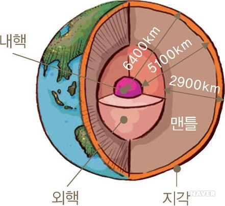

하늘이 파란 이유는 지구의 대기가 태양 빛 중에서 단파장인 푸른빛을 산란시키기 때문이다. 태양 빛은 여러 파장으로 나눌 수 있는데 그 중 한 부분이 우리가 볼 수 있는 가시광선이다. 가시광선은 빨주노초파남보 색깔로 나뉘게 된다. 빨간색은 상대적으로 파장이 길고, 파란색, 남색, 보라색으로 갈수록 파장이 짧다. 대기는 상대적으로 짧은 푸른색의 빛들을 많이 산란시키게 되고 이에 따라 우리의 눈에는 푸른색이 비쳐 하늘이 파랗게 보이는 것이다. 태양이 수평선 방향에 있다면 더욱 많은 대기들을 지나야만 우리 눈에 도달할 수 있는데, 푸른색의 단파장들은 산란되어 여러 방향으로 흩어지고 붉은 계열의 장파장들이 우리의 눈에 도달하기 때문에 저녁 하늘의 노을은 붉고 노란 계열로 보이는 것이다.
현재 지구의 대기는 약 78%의 질소분자와 21%의 산소분자, 1%의 물 분자, 그리고 미량의 아르곤, 이산화탄소 등으로 이루어져 있다. 대기의 대부분이 이산화탄소로 이루어진 금성과는 다른 구성의 대기를 가지게 된 것은 금성보다 태양에 멀리 떨어져 있어서 온도가 급상승하지 않았기 때문이다. 따라서 물의 증발에 따른 온실효과의 폭주현상이 일어나지 않았다.대기 중의 이산화탄소는 물에 융해되어 암석에 갇히거나, 식물의 광합성 작용으로 인해 산소로 바뀌게 되었다. 이로써 현재의 대기분포를 이루게 된 것이다.
지구의 평균온도는 약 290K이며, 수성이나 달처럼 온도 변화가 심하지 않다. 그 이유는 여러 가지가 있겠지만 대기에 의한 효과를 빼놓을 수 없다. 대기는 태양의 빛을 어느 정도 줄여주며, 지표에서 빠져나가는 열을 잡아주기도 한다. 그렇게 하여 낮과 밤의 온도격차를 줄여주어 생명체가 살기 적당한 온도를 유지시켜 준다.
하지만 산업화가 진행됨에 따라 이산화탄소를 비롯한 온실가스가 인위적으로 지구대기에 방출되고 있고, 이는 지구의 온난화를 초래하고 있다. 대기 중의 온실가스비율이 증가함에 따라 평균온도는 상승하고, 실제로 1970년도부터 평균온도는 지속적으로 상승하고 있다.
지구는 매우 커다란 자석으로 볼 수 있다. 막대자석의 자기력선이 철가루를 그림과 같은 형태로 만들어내는 것처럼, 지구의 자기력선도 비슷한 형태로 나타난다. 이것이 나침반의 바늘이 항상 북극을 가리키는 이유이다. 자기장은 또한 정전기에 의해 대전된 물체들을 밀어낸다. 만약에 이러한 대전 된 물체들이 자기장에서 움직인다면, 그것들은 자기장에 의해서 밀려날 것이다. 실제로도 지구로 향하는 대전 된 입자들(이온과 전자)은 지구자기장에 의해 밀려나고 있다.

지구의 구조는 지표에서의 거리에 따라 나눌 수 있다. 지구 내부의 구조는 지표면에서의 관측으로 얻을 수 있다. 그중에서 가장 좋은 방법은 지진파의 분석이다. 지진파는 P파와 S파로 나눌 수 있는데 P파는 액체와 고체를 통과하는 종파이며, S파는 고체만 통과할 수 있는 횡파이다. 이것을 바탕으로 지진파 해석에 의하면 지구는 외측부터 암석질의 지각, 암설질의 점탄성 체인 맨틀, 금속질 유체인 외핵, 금속질 고체인 내핵이라는 구조로 나뉜다.
핵은 외핵과 내핵으로 나뉘는데, 유동적인 외핵은 반경 약 3,480km, 고체인 내핵은 반경 약 1,220km이다. 외핵은 철과 니켈이 주성분으로 추정되나 수소나 탄소 등의 경원소가 10% 이상 포함되어 있다고 가정하고 있다. 그래야 지진파의 속도와 밀도를 설명할 수 있기 때문이다. 내핵은 지구 내부가 차가워질 때 외핵의 철과 니켈이 침강되어 생긴 것으로 보며, 현재에도 계속 성장하고 있다. 대류와 지구 자전의 원인으로 여겨지는 외핵의 유동적인 특성에 의해 전류가 발생하고, 이 전류에 의해 자기장이 생기는데 이것이 지구자기장이다. 이처럼 지구자기장의 발생은 역학적 운동과 관련이 있고, 이것의 유지구조를 다이너모구조라고 한다.
맨틀은 지각 아래 있으면서 내부의 핵을 둘러 존재하는 두꺼운 암석층이다. 이것은 깊이 약 2,900km까지 존재하며 지구 부피의 약 83%, 질량의 약 67%를 차지하고 있다. 맨틀 전체의 화학조성은 직접적으로 알 수 없으나 감람석과 휘석 등의 물질들이 주로 구성되어 있고, 지각에 비하여 철과 마그네슘의 함량이 높다고 알려져 있다. 맨틀대류의 양상도 포함하여 맨틀은 화학적, 역학적 연구대상인 영역이다. 지각과의 경계에는 지진파 속도가 불연속으로 변화하는 층이 있는데 이것을 모호로비치치불연속면(모호면)이라고 한다.
지각은 대륙지각과 해양지각으로 나눌 수 있다. 대륙지각은 현무암질의 하부지각과 화강암질의 상부지각으로 이루어져 있다. 두께(모호면까지의 깊이)는 지역에 의한 차가 커서 대략 30~60km로 알려져 있고, 평균밀도는 약 2,650kg/m³이다. 그리고 해양지각에 비해 알루미늄이 많으며 철과 마그네슘의 양이 적다. 해양지각은 대부분 현무암질로, 두께의 대략적인 평균은 6~7km이고 평균밀도는 약 2,950kg/m³이다.
우리 인간은 지구의 자원을 이용하여 현재까지 살아왔다. 하지만 지구를 생각하지 않는 무분별한 산업화는 몇몇의 문제(이산화탄소 증가로 인한 온실효과, 염화플루오린화탄소(CFC)의 오존층파괴 등)를 발생시켜 인류에 위협을 가하고 있다. 또한, 앞으로 수십억 년 사이에 거대운석의 충돌, 혹은 대륙이동에 따른 화산활동이나 기후변동 등에 의해 멸망할 가능성도 있다.